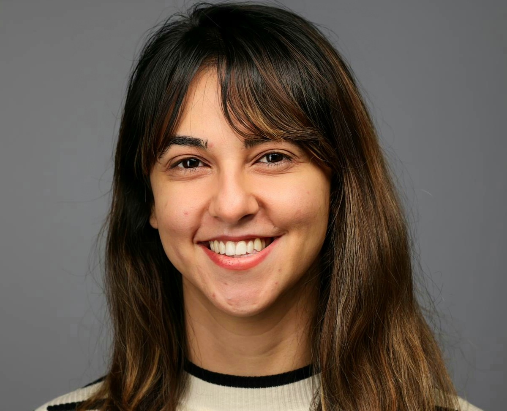

Welcome!

I am a postdoctoral scholar
at Perpignan university working with
Matthieu Martel on fixed-point code synthesis for neural networks.
I defended my thesis Fast and Efficient Bit-level Precision Tuning
in 2021 under the supervision of
Matthieu Martel and Assalé Adjé.
Check out my research, publications, my teaching and my contact information using the links above.
News:
- Best paper award at DRBSD@SC'23. Congratulations to all the team!
- I'm pleased to announce that this fall I'll be taking up a new position as assistant professor @ENAC, the French national civil aviation school.
- Our paper "What Operations can be Performed Directly on Compressed Arrays, and with What Error?" is accepted at DRBSD@SC'23.
- Our paper "Floating to Fixed-Point Conversion of Deep Neural Networks with Guaranteed Error Bounds" is accepted at CCIA'23.
Recent/Upcoming Talks:
- Upcoming: Floating-Point Mixed-Precision Tuning in HPC Landscape, ICSEC'23, October 2023.
- Upcoming: Floating to Fixed-Point Conversion of Deep Neural Networks with Guaranteed Error Bounds, CCIA'23, October 2023.
- On the Functional Properties of Automatically Generated Fixed-Point Controllers, CoDIT'23, July 2023.
- POPiX: A Fixed-Point Code Synthesis Tool Based on Constraint Generation, les journées FAC 2023, April 2023.
- Toward Accurate Floating-Point Cancellation Detection, CAFEIN Seminar/XLOOP@SC'22, December 2022.